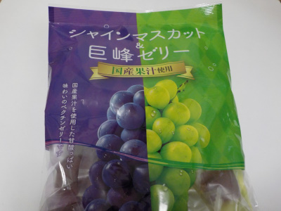

戸田屋のシャインマスカット＆巨砲ゼリーはペクチンゼリー
更新日 : 2022/08/20

製造が戸田屋さんで、販売がジェーシーシーと書かれていました。
ゲル化剤のペクチンは果物等の食物から出来ていてるそうです。ジャムにとろみがあるのはペクチンが作用しているためだそうです。
「とろみ」が固まるって凄いですね。とっても高濃度な感じがしますね。
で、この商品は紫と緑のゼリーが入っているんですが、とっても甘いです。特に緑の方が甘い感じがしました。
疲れた時に一粒食べるといいかなと思いました。